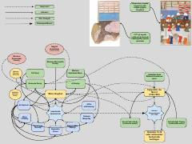

IOIstanbul observatoriyasi tarixi va uning ilmiy faoliyatiga oid tarixiy ma'lumotlar.
Ushbu asar Istanbul observatoriyasining tashkil etilishi, faoliyati va uning ilmiy merosiga bag'ishlangan. Unda observatoriyada ishlagan taniqli astronomlar, jumladan Taqiyuddin ibn Ma'ruf va Samarqand astronomiya maktabining ta'siri haqida ma'lumotlar keltirilgan.